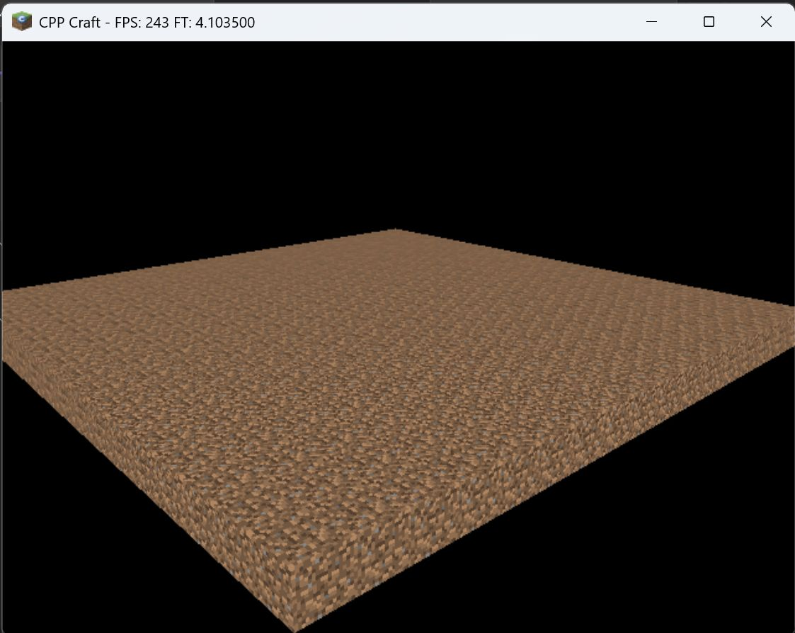
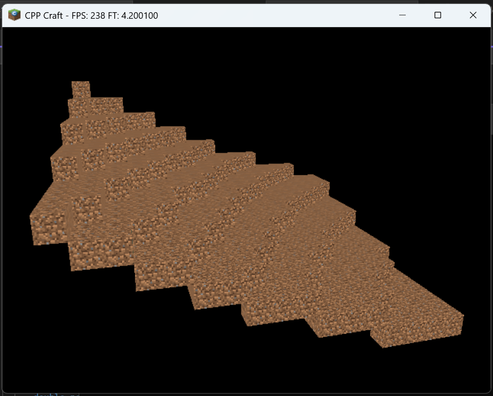
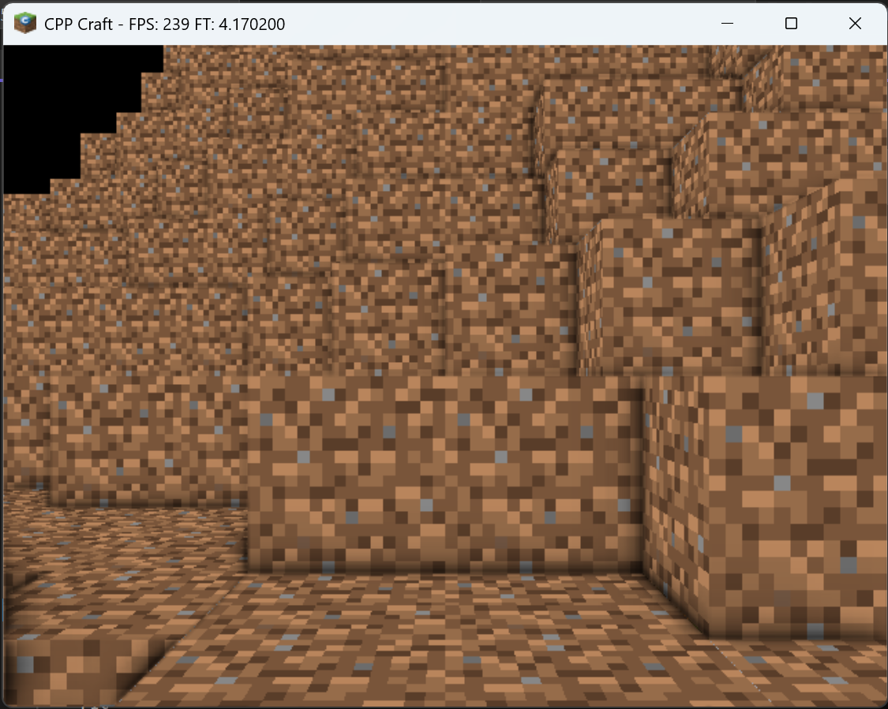
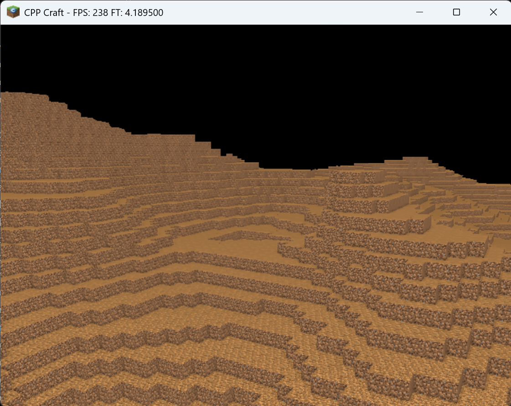
A voxel engine/Minecraft clone written in C++ using OpenGL and SDL2.
I began developing this project because I wanted to expand my knowledge of OpenGL after I completed my Game Engine module at university. Since then, I have implemented: procedural terrain generation using perlin noise, mesh combination to reduce draw calls, basic diffuse lighting and screen space ambient occlusion.
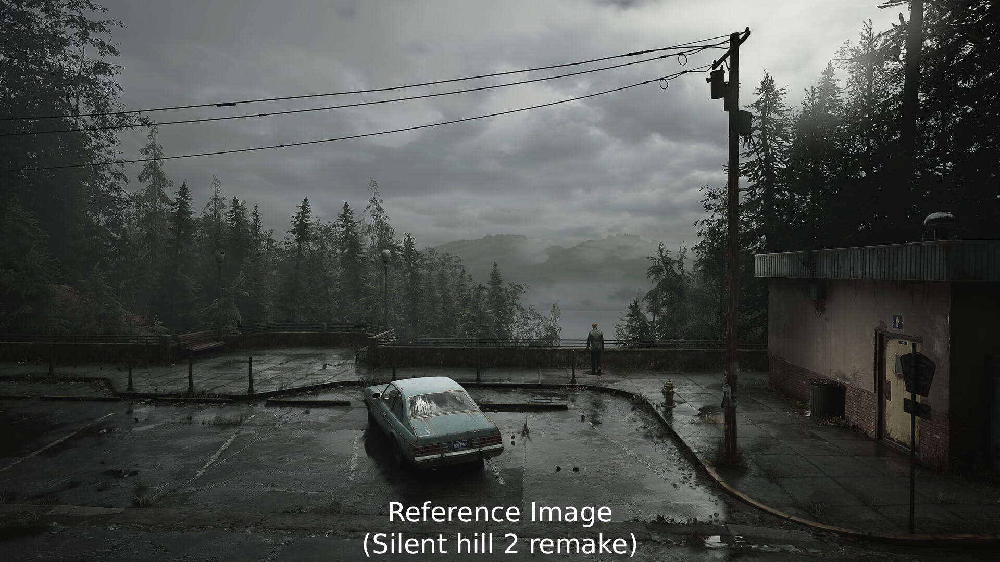
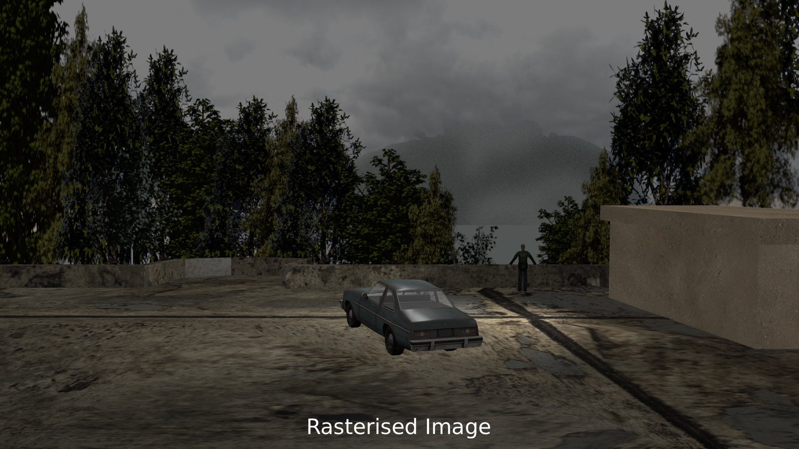
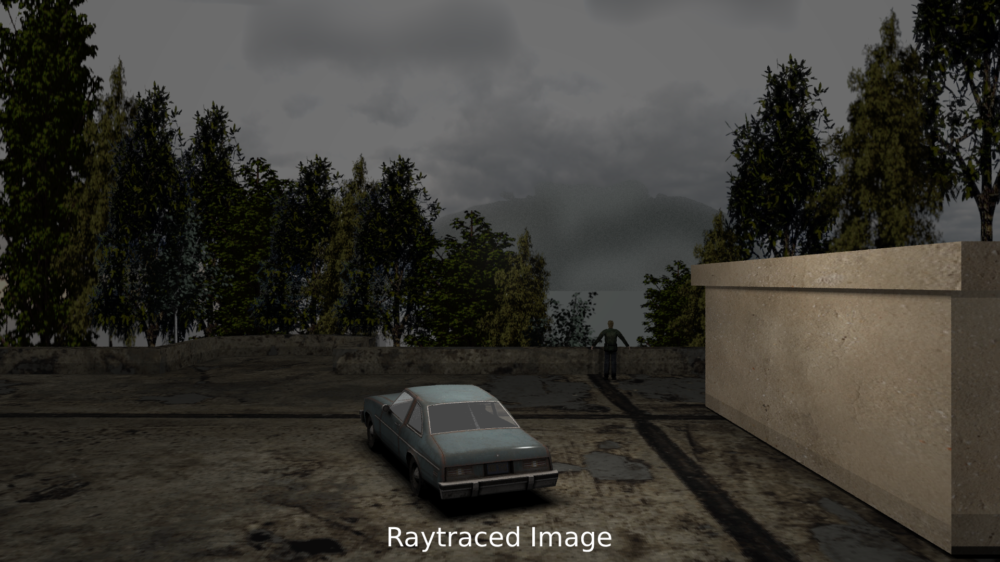
I developed a rasterizer from scratch and a raytracer from starter code.
I used C++ to develop a rasterizer with features such as texture mapping, Z-buffer depth testing, anti-aliasing, and alpha blending. I also used C++ and some starter code to develop features for the raytracer, including support for the Phong shading model, soft shadows, anti-aliasing, jittered multi-sampling, and a glass shader!
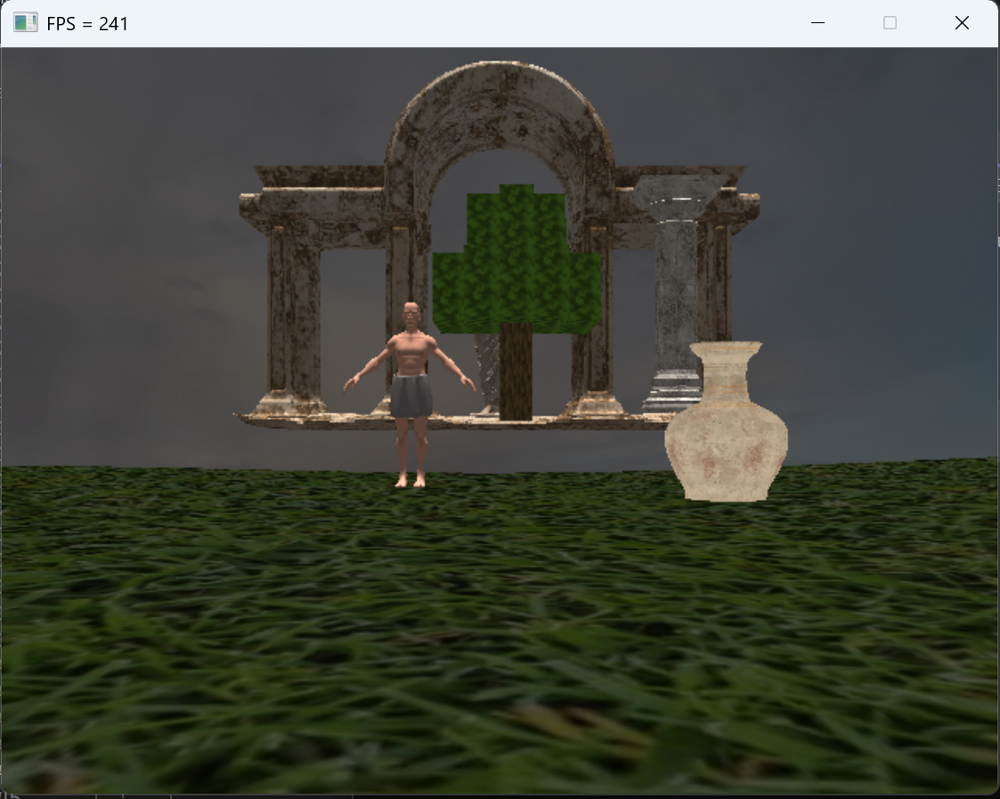
A simple game scene built with OpenGL with a focus on technical features.
This project has many technical features, including texture mapping, a mesh sky dome, instancing, LODs for the tree mesh, billboard objects, terrain generated from a height map, the ability to switch between two cameras, and conditional compilation for Linux and Windows builds.
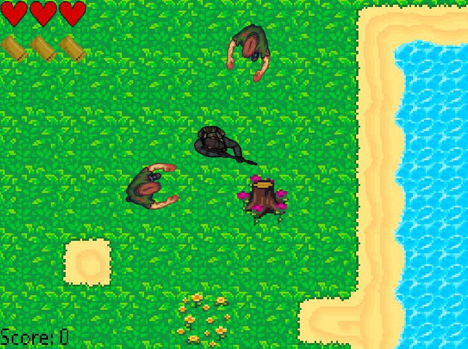
A simple 2D shooter game built using C++ and SDL2.
This is a simple 2D shooter in which you fight endless waves of zombies. It includes features such as tile mapping, animations, 360-degree movement, ammo limits, and particles on enemy death.
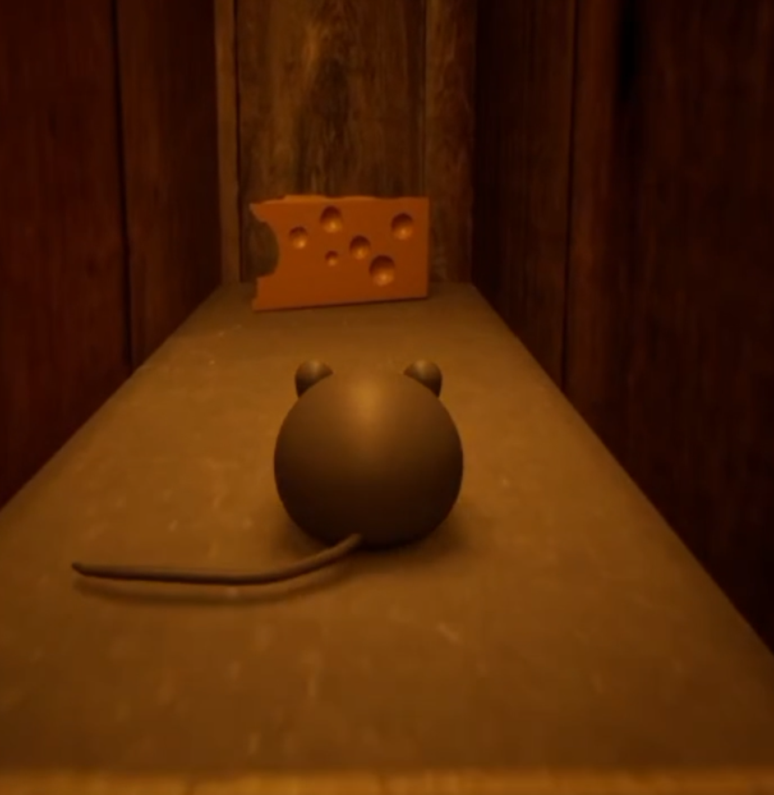
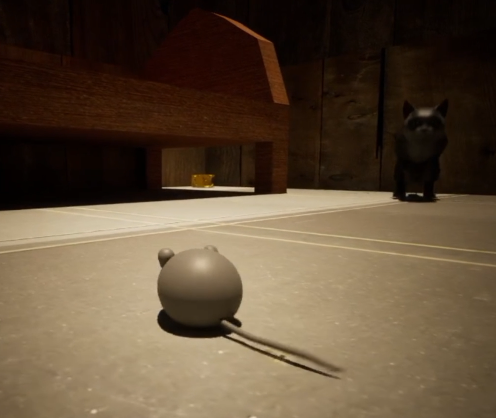
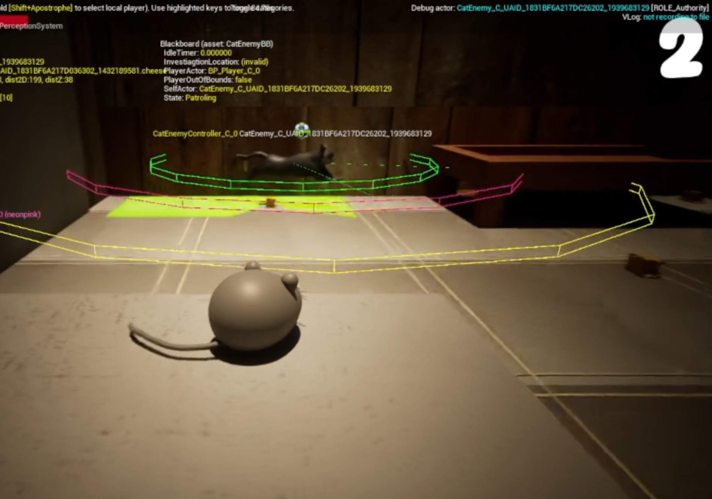
A game in which you collect cheese and avoid a cat, built using Unreal Engine.
In this game, the player is a mouse who must collect cheese and avoid the cat. It features AI perception, behavior trees that provide three states for the enemy AI, controller support, and use of the Unreal Niagara particle system.